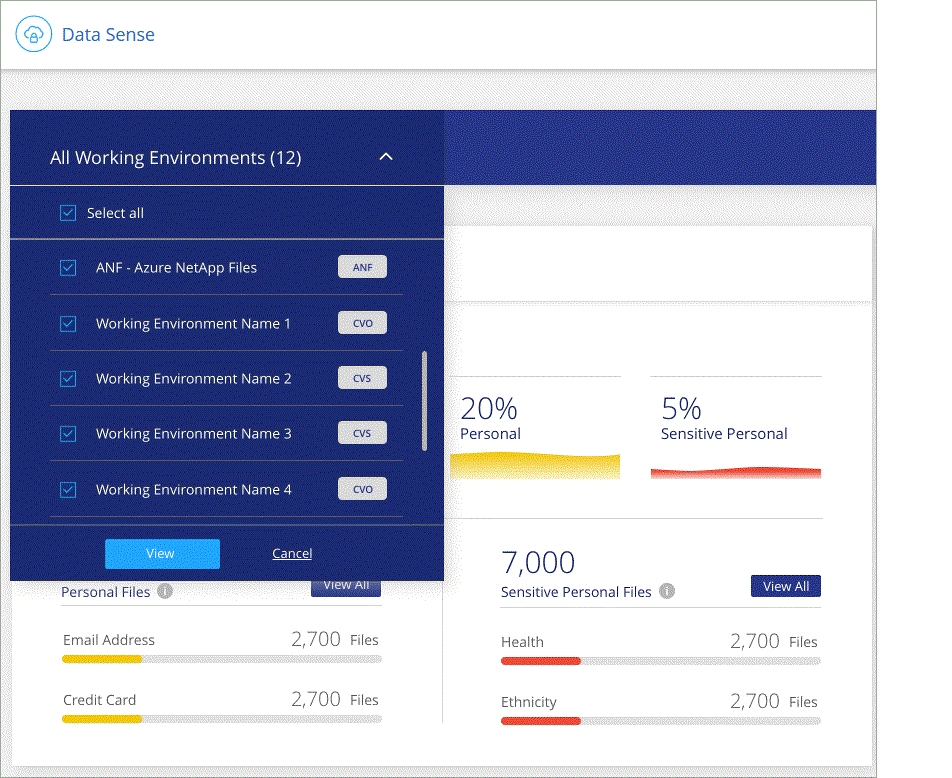

要求變更文件
要求變更文件 編輯此頁面
編輯此頁面 瞭解如何作出貢獻
瞭解如何作出貢獻檢視組織中儲存資料的法規遵循詳細資料
檢視組織中個人資料和敏感個人資料的詳細資料、以掌控您的私有資料。您也可以檢閱雲端資料在資料中的類別和檔案類型、以獲得可見度。

|
本節所述的功能僅在您選擇對資料來源執行完整分類掃描時可用。只有對應掃描的資料來源不會顯示檔案層級的詳細資料。 |
根據預設、Cloud Data Sense儀表板會顯示所有工作環境和資料庫的法規遵循資料。

如果您只想查看部分工作環境的資料、 選擇那些工作環境。
您也可以從「資料調查」頁面篩選結果、並將結果報告下載為 CSV 檔案。請參閱 篩選資料調查頁面中的資料 以取得詳細資料。
檢視包含個人資料的檔案
Cloud Data Sense會自動識別資料內部的特定字詞、字串和模式（Regex）。例如、個人識別資訊（PII）、信用卡號碼、社會安全號碼、銀行帳戶號碼、密碼、 以及更多資訊。 "請參閱完整清單"。
此外、如果您已新增要掃描的資料庫伺服器、則「 Data Fusion SUR_ 」功能可讓您掃描檔案、以識別資料庫中的唯一識別碼是否存在於這些檔案或其他資料庫中。請參閱 "使用 Data Fusion 功能新增個人資料識別碼" 以取得詳細資料。
對於某些類型的個人資料、Data Sense會使用_特殊 警示驗證來驗證其發現結果。驗證的方式是在找到的個人資料附近尋找一或多個預先定義的關鍵字。例如、Data Sense可識別美國社會安全號碼（ SSN ）若在 SSN 旁看到鄰近的詞彙、例如 SSN 或 _Social SECURITY 。 "個人資料表格" 顯示Data Sense何時使用接近驗證。
-
在Cloud Manager左側導覽功能表中、按一下* Data Th感應*、然後按一下* Compliance （*法規遵循）索引標籤。
-
若要調查所有個人資料的詳細資料、請按一下個人資料百分比旁的圖示。

-
若要調查特定類型個人資料的詳細資料、請按一下「檢視全部」、然後按一下「調查結果」圖示以取得特定類型的個人資料、例如電子郵件地址。

-
搜尋、排序、展開特定檔案的詳細資料、按一下 * 調查結果 * 查看遮罩資訊、或下載檔案清單、即可調查資料。
檢視含有敏感個人資料的檔案
Cloud Data Sense會自動識別特殊類型的敏感個人資訊、如隱私權法規所定義 "GDPR 第 9 和第 10 條"。例如、關於個人健康、族群或性取向的資訊。 "請參閱完整清單"。
Cloud Data Sense使用人工智慧（AI）、自然語言處理（NLP）、機器學習（ML）和認知運算（CC）來瞭解其掃描內容的意義、以便擷取實體並據此分類。
例如、一個敏感的 GDPR 資料類別是「族群」。由於其NLP能力、Data Sense可區分「George is墨西哥」（表示GDPR第9條所述的敏感資料）與「George is墨西哥食品」（George正在吃墨西哥食品）這兩個句子之間的差異。
|
|
掃描敏感的個人資料時、僅支援英文。稍後將新增更多語言支援。 |
-
在Cloud Manager左側導覽功能表中、按一下* Data Th感應*、然後按一下* Compliance （*法規遵循）索引標籤。
-
若要調查所有敏感個人資料的詳細資料、請按一下敏感個人資料百分比旁的圖示。

-
若要調查特定敏感個人資料類型的詳細資料、請按一下 * 檢視全部 * 、然後按一下 * 調查結果 * 圖示、以取得特定類型的敏感個人資料。

-
搜尋、排序、展開特定檔案的詳細資料、按一下 * 調查結果 * 查看遮罩資訊、或下載檔案清單、即可調查資料。
依類別檢視檔案
Cloud Data Sense會將掃描的資料分成不同類型的類別。類別是以 AI 分析每個檔案的內容和中繼資料為基礎的主題。 "請參閱類別清單"。
類別可顯示您擁有的資訊類型、協助您瞭解資料的現況。例如、簡歷或員工合約等類別可能包含敏感資料。調查結果時、您可能會發現員工合約儲存在不安全的位置。然後您就可以修正該問題。
|
|
類別支援英文、德文和西班牙文。稍後將新增更多語言支援。 |
-
在Cloud Manager左側導覽功能表中、按一下* Data Th感應*、然後按一下* Compliance （*法規遵循）索引標籤。
-
直接從主畫面按一下前 4 大類別之一的 * 調查結果 * 圖示、或按一下 * 檢視全部 * 、然後按一下任何類別的圖示。

-
搜尋、排序、展開特定檔案的詳細資料、按一下 * 調查結果 * 查看遮罩資訊、或下載檔案清單、即可調查資料。
依檔案類型檢視檔案
Cloud Data Sense會將掃描的資料取走、並依檔案類型加以細分。檢閱檔案類型有助於控制敏感資料、因為您可能會發現某些檔案類型儲存不正確。 "請參閱檔案類型清單"。
例如、您可能會儲存 CAD 檔案、其中包含有關組織的非常敏感資訊。如果機密資料不安全、您可以限制權限或將檔案移至其他位置、以取得機密資料的控制權。
-
在Cloud Manager左側導覽功能表中、按一下* Data Th感應*、然後按一下* Compliance （*法規遵循）索引標籤。
-
直接從主畫面按一下前 4 大檔案類型之一的 * 調查結果 * 圖示、或按一下 * 檢視全部 * 、然後按一下任何檔案類型的圖示。

-
搜尋、排序、展開特定檔案的詳細資料、按一下 * 調查結果 * 查看遮罩資訊、或下載檔案清單、即可調查資料。
檢視檔案中繼資料
在「資料調查結果」窗格中、您可以按一下  用於檢視檔案中繼資料的任何單一檔案。
用於檢視檔案中繼資料的任何單一檔案。

除了顯示檔案所在的工作環境和磁碟區之外、中繼資料還會顯示更多資訊、包括檔案權限、檔案擁有者、是否有此檔案的重複項目、以及指派的AIP標籤（如果有） "整合式AIP與雲端資料感測"）。如果您打算使用、這項資訊很實用 "建立原則" 因為您可以看到用來篩選資料的所有資訊。
請注意、並非所有資料來源都能取得所有資訊、只是適合該資料來源的資訊而已。例如、Volume名稱、權限和AIP標籤與資料庫檔案無關。
檢視單一檔案的詳細資料時、您可以對該檔案採取幾項行動：
-
您可以將檔案移動或複製到任何NFS共用區。請參閱 "將來源檔案移至NFS共用區" 和 "將來源檔案複製到NFS共用區" 以取得詳細資料。
-
您可以刪除檔案。請參閱 "正在刪除來源檔案" 以取得詳細資料。
-
您可以將特定狀態指派給檔案。請參閱 "套用標記" 以取得詳細資料。
-
您可以將檔案指派給Cloud Manager使用者、負責執行任何需要在檔案上執行的後續行動。請參閱 "指派使用者至檔案" 以取得詳細資料。
-
如果您已將AIP標籤與Cloud Data Sense整合、您可以為此檔案指派標籤、或是變更為其他標籤（如果已經存在）。請參閱 "手動指派AIP標籤" 以取得詳細資料。
檢視檔案和目錄的權限
若要檢視可存取檔案或目錄的所有使用者或群組清單、以及擁有的權限類型、請按一下*檢視所有權限*。此按鈕僅適用於CIFS共用區、SharePoint和OneDrive中的資料。
請注意、如果您看到的是SID（安全性識別碼）、而非使用者和群組名稱、則應該將Active Directory整合到Data Sense中。 "瞭解如何做到這一點"。

您可以按一下  可讓任何群組查看屬於群組的使用者清單。
可讓任何群組查看屬於群組的使用者清單。
此外、 您可以按一下使用者或群組的名稱、「調查」頁面會顯示該使用者或群組的名稱、並填入「使用者/群組權限」篩選器中、以便查看使用者或群組可存取的所有檔案和目錄。
正在檢查儲存系統中的重複檔案
您可以檢視儲存系統中是否儲存了重複的檔案。如果您想要找出可節省儲存空間的區域、此功能非常實用。此外、確保儲存系統中不會不必要地複製具有特定權限或敏感資訊的特定檔案、也很有幫助。
Data Sense使用雜湊技術來判斷重複的檔案。如果任何檔案的雜湊代碼與其他檔案相同、我們可以100%確定檔案確實重複、即使檔案名稱不同。
您可以下載重複檔案清單、並將其傳送給儲存設備管理員、讓他們決定可以刪除哪些檔案（如果有）。您也可以 "刪除檔案" 如果您確信不需要特定版本的檔案、請自行設定。
檢視所有重複的檔案
如果您想要在工作環境中複製的所有檔案清單、以及要掃描的資料來源、您可以在「資料調查」頁面中使用名為「重複項目>有重複項目」的篩選條件。
所有檔案類型（不包括資料庫）的重複檔案、大小至少為50 MB、且（或）包含個人或敏感個人資訊、都會顯示在「結果」頁面中。
檢視特定檔案是否重複
如果您想要查看單一檔案是否有重複項目、請在「資料調查結果」窗格中按一下  用於檢視檔案中繼資料的任何單一檔案。如果某個檔案有重複項目、此資訊會顯示在「重複項目」欄位旁。
用於檢視檔案中繼資料的任何單一檔案。如果某個檔案有重複項目、此資訊會顯示在「重複項目」欄位旁。
若要檢視重複檔案的清單及其所在位置、請按一下*檢視詳細資料*。在下一頁中、按一下「檢視重複記錄」以檢視「調查」頁面中的檔案。


|
您可以使用本頁提供的「檔案雜湊」值、並直接在「調查」頁面中輸入、以隨時搜尋特定的重複檔案、也可以在「原則」中使用。 |
檢視特定工作環境的儀表板資料
您可以篩選Cloud Data Sense儀表板的內容、查看所有工作環境和資料庫的法規遵循資料、或僅查看特定工作環境的法規遵循資料。
當您篩選儀表板時、Data Sense會將法規遵循資料和報告範圍僅限於您所選的工作環境。
-
按一下篩選下拉式清單、選取您要檢視資料的工作環境、然後按一下 * 檢視 * 。

篩選資料調查頁面中的資料
您可以篩選調查頁面的內容、只顯示您要查看的結果。這是一項非常強大的功能、因為在您調整資料之後、您可以使用頁面頂端的按鈕列執行各種動作、包括複製檔案、移動檔案、新增標記或AIP標籤至檔案等。
如果您想要在調整頁面內容之後、將其下載為報告、請按一下  按鈕。您可以將報告本機儲存為.CSV檔案（最多可包含5、000列資料）、或儲存為匯出至NFS共用的.Json檔案（可包含不限數量的列）。 "如需資料調查報告的詳細資訊、請前往此處"。
按鈕。您可以將報告本機儲存為.CSV檔案（最多可包含5、000列資料）、或儲存為匯出至NFS共用的.Json檔案（可包含不限數量的列）。 "如需資料調查報告的詳細資訊、請前往此處"。

-
最上層的索引標籤可讓您檢視檔案（非結構化資料）、目錄（資料夾和檔案共用）或資料庫（結構化資料）的資料。
-
每欄頂端的控制項可讓您依照數字或字母順序來排序結果。
-
左窗格篩選器可讓您從下列屬性中選取、以精簡結果：
篩選器 詳細資料 原則
選取原則。行動 "請按這裡" 可查看現有策略列表並創建您自己的自定義策略。
開啟權限
選取資料內及資料夾/共用內的權限類型
使用者/群組權限
選取一或多個使用者名稱和/或群組名稱、或輸入部分名稱
檔案擁有者
輸入檔案擁有者名稱
標籤
選取 "AIP標籤" 指派給您的檔案
工作環境類型
選取工作環境類型。OneDrive、SharePoint和Google雲端磁碟的分類為「Cloud Apps」。
工作環境名稱
選擇特定的工作環境
儲存儲存庫
選取儲存儲存儲存庫、例如磁碟區或架構
檔案路徑
輸入部分或完整路徑
類別
選取 "類別類型"
敏感度等級
選取敏感度等級
識別碼數目
選取每個檔案偵測到的敏感識別碼範圍。包括個人資料和敏感的個人資料。
個人資料
選取 "個人資料類型"
敏感個人資料
選取 "敏感個人資料的類型"
資料主旨
輸入資料主旨的完整名稱或已知識別碼
目錄類型
選取目錄類型：「Share（共用）」或「Folder（資料夾）」
檔案類型
選取 "檔案類型"
檔案大小
選取檔案大小範圍
建立時間
選取檔案建立時的範圍
探索到的時間
選取「Data偵測」探索檔案的範圍
上次修改日期
選取上次修改檔案的範圍
上次存取
選取上次存取檔案的範圍。對於Data Sense掃描的檔案類型、這是Data Sense掃描檔案的最後一次。
重複項目
選取檔案是否在儲存庫中重複
檔案雜湊
輸入檔案的雜湊以尋找特定檔案、即使名稱不同也沒問題
標記
選取 "標記" 指派給您的檔案
指派給
選取指派檔案的人員名稱
請注意、「目錄」層級目前不支援按鈕列和原則中可用的動作。